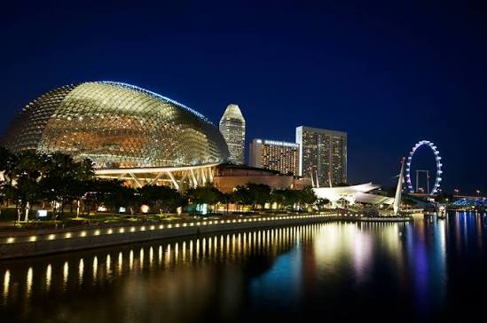
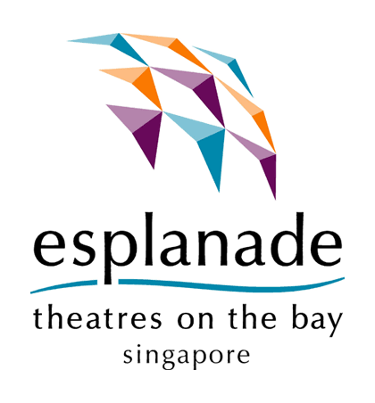

Charity + IPC
No shares, dividends or share price. Tax-deductible giving status runs to 31 March 2030.
Strategy and commercial review · National arts centre
A public-value institution with a commercial engine hidden beneath the stage.
Singapore's national performing arts centre is a presenter, venue operator, landlord and fundraiser in one waterfront campus. Its reserves and market position are strong; its economics are designed to break even and the grant must close a structural funding gap.


00 · Evidence · Research score
Esplanade sits in the Satisfactory band. Its market pillar is the strongest in the coverage universe, while a single campus, near-zero surplus and reliance on public funding constrain Financial Strength and Risk Resilience.
Satisfactory · sensitivity range 53.6-59.8.
The framework measures organisational quality and resilience, not artistic merit or public value.
A charity built to break even cannot look like a cash-rich listed company on margins, but its moat is unusually durable.
Reserves, members and the campus lift the score. Thin margins, one geography and grant dependence hold it back.
| Component | Weight | Rating | Points | Assessment |
|---|---|---|---|---|
| Underlying income CAGR | 6 | 2.0 | 2.4 | +4.1% a year, FY2021/22-25/26. |
| Surplus margin | 7 | 1.6 | 2.2 | Five-year median near 0.9%. |
| ROE equivalent | 9 | 1.6 | 2.9 | Surplus on accumulated funds below 1%. |
| Cash-flow stability | 9 | 2.0 | 3.6 | Operating cash moves with grant timing. |
| Balance sheet | 9 | 5.0 | 9.0 | No borrowings and S$71.4m reserves. |
| Component | Weight | Rating | Points | Assessment |
|---|---|---|---|---|
| Brand recognition | 2 | 4 | 1.6 | National arts centre and city icon. |
| Competitive advantage | 7 | 4 | 5.6 | Hard-to-copy campus, state backing and scale. |
| Market share | 4 | 3 | 2.4 | About 32% of live attendances. |
| Relationships | 5 | 4 | 4.0 | Members bought over 70% of Presents tickets. |
| Geographic reach | 2 | 1 | 0.4 | One campus by mandate. |
| Component | Weight | Rating | Points | Assessment |
|---|---|---|---|---|
| Industry growth | 6 | 2 | 2.4 | Moderate media and tourism growth. |
| Technology adoption | 4 | 3 | 2.4 | Four venues rewired; 68% of attendance digital. |
| New markets | 6 | 2 | 2.4 | Waterfront Theatre adds mid-size capacity. |
| Diversification | 5 | 3 | 3.0 | Earned income spread; grants remain 56%. |
| Partnerships | 4 | 4 | 3.2 | Singtel, DBS Foundation and AXS. |
| Component | Weight | Rating | Points | Assessment |
|---|---|---|---|---|
| Economic resilience | 3 | 1 | 0.6 | Income fell 46% in FY2020/21. |
| Customer diversification | 4 | 4 | 3.2 | Thousands of buyers, hirers, tenants and donors. |
| Technology resilience | 3 | 4 | 2.4 | Live work is hard to replicate; digital widens reach. |
| Regulatory resilience | 2 | 3 | 1.2 | IPC status runs to March 2030. |
| Operational resilience | 3 | 3 | 1.8 | One campus carries all live output. |
01 · Exhibit · The organisation
The Esplanade Co Ltd is a company limited by guarantee, registered charity and Institution of a Public Character. It presents art, rents venues and operates a mall and car park; MCCY funds the net gap.
MCCY and Tote Board support reach, inclusion and artists.
Festivals, commissions and mostly free public activity.
Six venues and a waterfront turn programmes into visits.
Tickets, hire, rent and gifts cover 45% of cost.
The activity visitors notice least, the estate, makes the most dependable contribution.
No shares, dividends or share price. Tax-deductible giving status runs to 31 March 2030.
Theatre, Concert Hall, Waterfront Theatre, two studios and the DBS Foundation Outdoor Theatre.
Free programming generates footfall; venue hire and estate income monetise the place around it.
Officially, Esplanade's mission is to entertain, engage, educate and inspire through the arts.
02 · Exhibit · Income engines
FY2025/26 income was S$33.8m, or about S$30.9m without a one-off SISTIC gain. Estate income is the dependable base; venue hire monetises scarce halls; ticketing and giving are more mission-linked and more variable.
The estate and halls are above 2019. Paid audience demand and large-donor comparables are not.
| Stream | FY2025/26 | Share | YoY | Driver |
|---|---|---|---|---|
| Mall and rentals | S$8.70m | 25.7% | +14.1% | Footfall and lease cycles |
| Venue hire | S$6.50m | 19.2% | +14.1% | Venue days and hirers |
| Ticketing | S$5.94m | 17.6% | +17.7% | Programme mix and members |
| Sponsorships & donations | S$3.72m | 11.0% | +20.3% | Campaigns and tax deductions |
| Car park | S$1.43m | 4.2% | +8.2% | CBD and event traffic |
| Other income | S$7.55m | 22.3% | +65.4% | Matching, interest and one-offs |
Rent, hire and parking generated 49% of income. Tickets cover only about 37% of direct show cost before staff.
03 · Evidence · Financials
Underlying income rose 13% while core costs rose 4%. Cost recovery reached 45%, the best since FY2019/20, but the operating margin remained roughly 3% on a S$71.5m cost base.
Income reached S$33.8m, but 45% recovery remains below the 52% achieved in FY2018/19.
Includes the sale of control in SISTIC.
Estimated gain removed for operating quality.
About 2.5 times the prior year on the same basis.
| FY | Income | Costs ex rent | Grants | Result | Recovery |
|---|---|---|---|---|---|
| 2017/18 | S$31.2m | S$63.1m | S$36.9m | S$5.1m | 50% |
| 2018/19 | S$29.4m | S$59.4m | S$37.0m | S$7.0m | 52% |
| 2021/22 | S$26.3m | S$69.4m | S$35.1m | -S$8.0m | 40% |
| 2023/24 | S$26.6m | S$75.0m | S$49.0m | S$0.7m | 42% |
| 2024/25 | S$27.3m | S$74.6m | S$47.5m | S$0.2m | 42% |
| 2025/26 | S$33.8m | S$71.5m | S$43.1m | S$5.2m | 45% |
Government rent is charged and fully subvented, so the review excludes the round trip from core cost analysis.
04 · Evidence · Funding gap
Since FY2022/23, higher earned income has almost kept pace with higher core cost. The grant remains the balancing item, while S$71.4m of reserves bridge timing and shocks.
About 43% is recurring, booked or pledged; the other 57% still has to be sold or raised.
Recurring estate, advance bookings and pledged support are known before the year is fully sold.
Approved grants not yet received plus SISTIC sale proceeds due after year end.
A grant that always fills the gap can weaken the return to commercial improvement.
If S$71.5m of cost and S$30.9m of income both grow 3%, the funding gap widens by roughly S$1.2m.
05 · Evidence · Market position
The contradiction is intentional: roughly three-quarters of Presents activity is free. Esplanade's competitive position is measured better by reach, relationships and cost recovery than by box-office share.
Sydney reported 457,525 paid tour patrons. Esplanade does not report a comparable paid-tour line.
About 70% of Presents ticketing, up roughly 50%.
Depth matters more than headline member count.
68% of FY2025/26 attendances were digital.
Live attendance at 1.90m remained 29% below FY2018/19, while digital attendance had tripled.
06 · Evidence · Demand transmission
No single macro driver governs Esplanade. Earned income feels shocks first; grants adjust later. Reserves bridge the lag between a fall in visits, bookings or deposit income and the next public-budget cycle.
Tourism and office traffic reprice slowly through leases.
Promoters and arts groups reserve halls 6-24 months out.
Members dominate paid Presents demand.
IPC status and matching funds turn gifts into leverage.
S$43.1m of FY2025/26 grants were determined by public policy, making government support the institution's largest source of economic demand.
| Shock | Most exposed | Lag | FY2025/26 exposure |
|---|---|---|---|
| Tourism | Estate | 0-6 months | S$10.1m income |
| Corporate budgets | Hire and giving | 6-18 months | S$10.2m combined |
| Household spending | Box office | 0-12 months | S$5.9m |
| Government budget | Everything | Annual | S$43.1m grants |
| Interest rates | Other income | Immediate | Yield fell 2.46% to 1.15% |
| Wages and energy | Costs | Immediate | S$44.2m pay + property |
A quartet still needs four players. Pay follows the wider economy even when live-performance productivity cannot rise at the same rate.
07 · Evidence · Frameworks
Commercial pressure lands on venue hire and ticketing, not on the grant. Esplanade's defence is what commercial halls do not offer: commissioning, festival depth, free programming and a civic waterfront place.
MBS, The Star and Indoor Stadium compete for hirers and leisure time.
Ticket buyers are fragmented; large promoters have alternatives.
Artists, specialised crews and energy suppliers set important costs.
A rival national centre is unlikely; the new MBS arena changes capacity.
Streaming, stadium tours and travel compete for the leisure dollar.
About three-quarters of Presents activities reduce the price at the door to zero.
City image, tourism, artist development, inclusion and civic life spill beyond buyers.
The grant is about S$7.2 per attendance when digital reach is included.
Venue hire contributes positively; giving is high contribution but lumpy; Presents is negative by design, with ticketing covering about 37% of direct show costs.
08 · Decision · Risk matrix
Select a risk to inspect its trigger and mitigation. The matrix distinguishes fast cost shocks from slower policy exposure and does not rely on colour alone.
About 89% of the operating surplus.
Almost three times the benefit of 5% higher ticket sales.
Immediate pressure on other income.
| Risk | Likelihood / impact | Leading indicator | Mitigant |
|---|---|---|---|
| Grant flat or cut | Medium / High | MCCY budget | Reserves and recovery |
| Cost inflation | High / Medium | Wages and energy | Contracts and casual staffing |
| Tourism shock | Medium / Medium | Arrivals and occupancy | Local and tourist mix |
| New large venues | Medium / Medium | Promoter bookings | Mid-size niche |
| Falling rates | High / Low | SORA and deposits | Ladder maturities |
| Cyber breach | Low / High | Partner incidents | Controls and audits |
S$71.4m of reserves can bridge a bad year, not a decade of a growing structural gap.
09 · Decision · Strategy and outlook
Ticket price is the last lever: a 5% increase raises only about S$0.30m. Visitor products, member depth, matched giving and an earned-income retention compact offer more value with less mission trade-off.
Paid architecture and backstage tours for a small share of tourists.
Paid tiers, member previews and a giving ladder.
Build campaigns around public matching funds.
Agree that part of above-baseline income remains with Esplanade.
Interactive FY2026/27 outlook
Underlying income grows modestly while core cost rises 3%.
Excludes SISTIC gain
Flat year on year
Gap remains S$41.8m
A hard-to-copy campus, 166,000 members and strong advance bookings.
Live work carries Baumol costs while much public programming is intentionally free.
Whether earned income stays above 45% and whether funding design rewards improvement.
The score rises with paid visitor products, durable cash flow and higher recovery. It falls if grants stall while pay and property costs keep compounding.
Sources and evidence
Evidence grade B. The review adapts a listed-company scorecard to a charity and removes one-off gains from growth and margin.
Research standard
Figures are in Singapore dollars unless stated. Data are as of 3 November 2026. This is independent research for education and is not affiliated with The Esplanade Co Ltd.
Institution imagery was supplied with the research brief and is presented as editorial evidence.